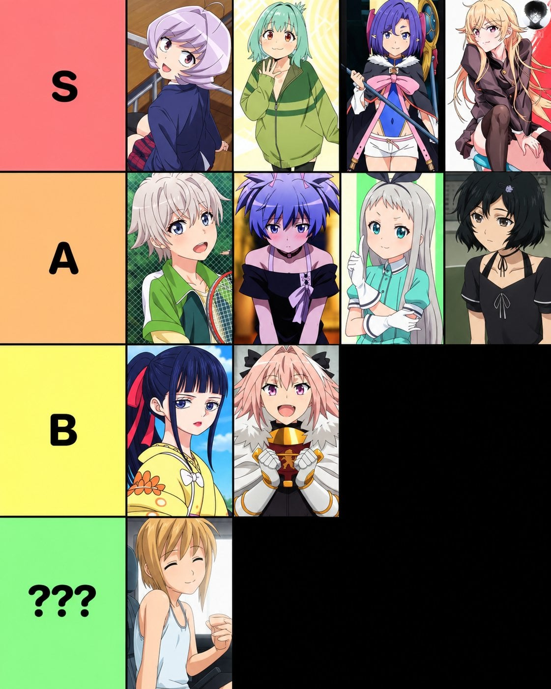

🍆애니속 귀요미 티어리스트
댓글
히데요시는 히데요시라서 빠진거군 납득.
심의결과 부당함

yooo what the fuck
절대 보쿠라는 애니메이션을 보지마
만든놈 알못이네 A 4번은 여캐임
세계선 바꾸고 여자가 된 직후에 장면임
아잇 퉤퉤 위장가지였어?
위장가지면 그건 그냥 여자잖아;
콩가리
그래서 누군데!
슈타게 루카
근데 주인공한테 감회되서 다시 남자의 삶 선택함
내가 계집애와 사랑에 빠질 뻔 하다니 믿을 수 없군
머야이게
맨윗줄 맨오른쪽 개이쁘다
이게 뭔데 설명해줘 씁덕들아
🍆
그 도망 잘치는 쇼타도련님은 왜 없음? 걔가 원탑아님?
오토코노코는 아닌 판정인가봄


보쿠노피코 죄다 소추라 재미없음
왜 이 분야 원조 와타라세 준이 없는거냐
S 맨 앞에 있는 애 성별 공식적으로 남자인지 여자인지 밝히지 않았는데 왜 넣었대냐
Yoooo
다 몰라도 하나만큼은...
노마 룬 왜 없음
나오자마자 S급 등극하는 생구멍 클라스
히데리는 S 올려라. 작품명도 S인데
오토리탄 저 시발련 고추크기 3cm가 공식이라며?
정말이지 푹푹 쑤셔박히면서 윤활유 겸용 암컷타락즙 뿜어내는 욕정스위치 외의 기능이라곤 없구나

담배고양이 어딧누
거를 타선이 없네
히데요시가 없누
ㄹㅇ 만잘알
위에 전부 가지야?>
보추같은 애들만 갔다놓았네 뒤질래
피코는 SSS+ 등급이지
사이카 어흐
아스톨포가 B는 좀 ㅇㅇ;;
A1은 확실해?
🍆